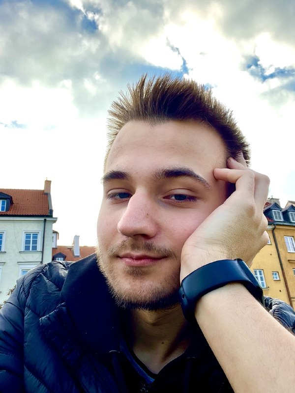

administrator techniczny serwera Minecraft z modami
2024-2025
Naprawianie problemów z serwerem, przepisywanie niektórych wtyczek, przepisywanie modyfikacji

Email: amedvid2@stu.vistula.edu.pl
Telefon: +48503905204
Miasto: Warszawa, Polska
Jestem studentem drugiego semestru Informatyki na Uniwersytecie Vistula. Chcę w przyszłości odnieść sukces i zająć się tworzeniem stron internetowych oraz programowaniem w języku Java.
2024-2025
Naprawianie problemów z serwerem, przepisywanie niektórych wtyczek, przepisywanie modyfikacji
2025-obecnie
Przygotowuję się do rozmów kwalifikacyjnych poprzez rozwijanie projektów na GitHub
Akademia Finansów i Biznesu Vistula, Informatyka, drugi semestr studiów